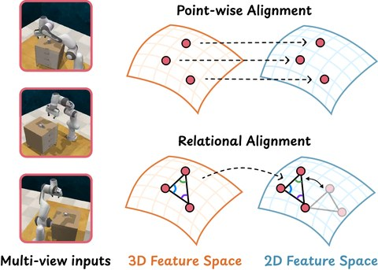
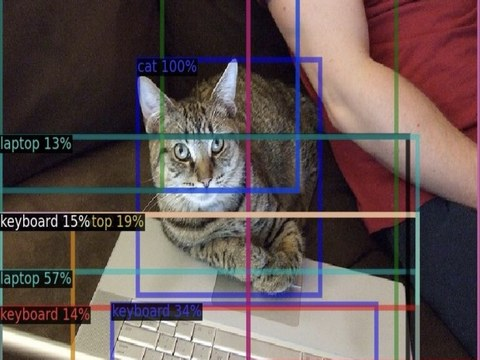
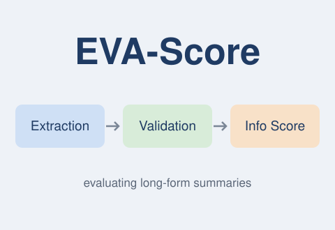

Yazhe Wan (万亚哲)
I'm currently a PhD student in the Centre for Intelligent Sensing within the School of Electronic Engineering and Computer Science at Queen Mary, University of London, supervised by Dr. Changjae Oh and Dr. Ziquan Liu. I joined this Ph.D. program after completing my undergraduate studies through the Joint Programme between Queen Mary University of London and Beijing University of Posts and Telecommunications (BUPT).
My research interests lie in embodied AI, robotics, and computer vision. I am currently working on multi-modal foundation models for generalizable robotic manipulation.

Aligning relational structure, rather than individual features, between 3D and 2D feature spaces for spatially-aware VLA models.

A plug-and-play, self-supervised fine-tuning of the VLM backbone (<0.8M parameters) that improves region-level features for cooperative open-vocabulary detection.

An information-based metric for long-form summaries that extracts the information in a summary and validates it against the reference.